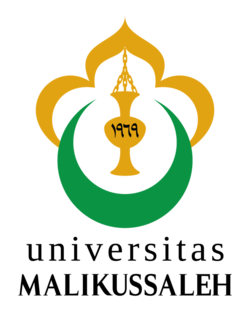

Mentor Mata Kuliah P3MA
Agustus - Desember 2025

Geser menggunakan tombol panah di atas untuk melihat dokumentasi kegiatan
Pengajaran & Pembinaan Akademik Al-Qur'an (P3MA)
Mengemban tanggung jawab sebagai Mentor Mata Kuliah Pengembangan Kepribadian Pembentukan Karakter Mahasiswa (P3MA) di Fakultas Ekonomi Universitas Malikussaleh (Agustus - Desember 2025). Berdedikasi penuh dalam membimbing dan mengajar mahasiswa semester 1 Program Studi Manajemen selama satu semester penuh.
Transformasi Kompetensi Tilawah & Ilmu Tajwid
Fokus menyampaikan materi kurikulum secara komprehensif, mencakup pelatihan membaca Al-Qur'an yang berlandaskan kaidah tajwid yang benar, ketepatan makhrajul hurup, serta penguasaan fashohah yang selaras dengan nilai-nilai Islam yang luhur dan aplikatif.
Internalisasi Fondasi Spiritual (Salimul Aqidah & Shohihul Ibadah)
Mengintegrasikan proses pembelajaran Al-Qur'an dengan penguatan karakter dasar keislaman, menanamkan nilai-nilai fundamental akidah yang lurus (salimul aqidah) serta tata cara ibadah yang benar dan shahih (shohihul ibadah) guna membentuk integritas moral mahasiswa baru.
Kompetensi yang Diasah:
Bukti Sertifikat / Dokumen Resmi
Klik tombol di samping untuk melihat sertifikat dan bukti keikutsertaan program.